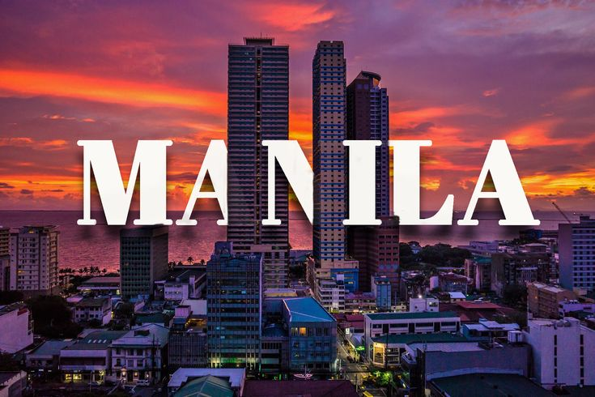
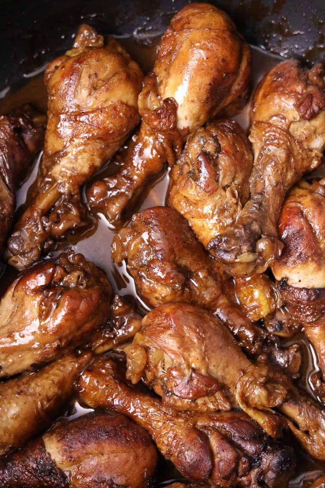
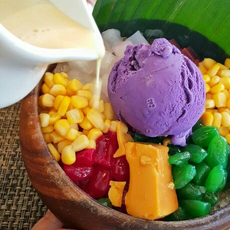
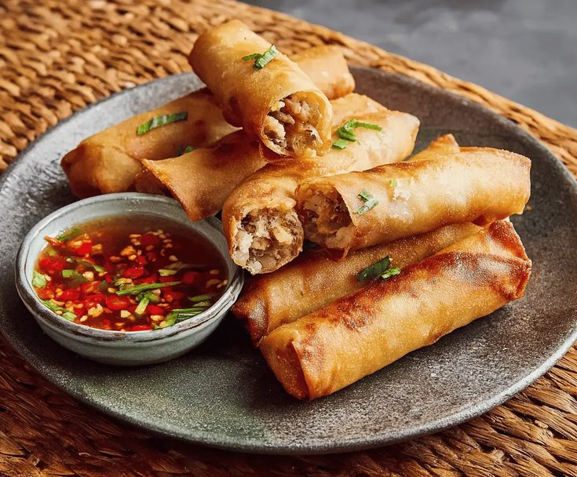
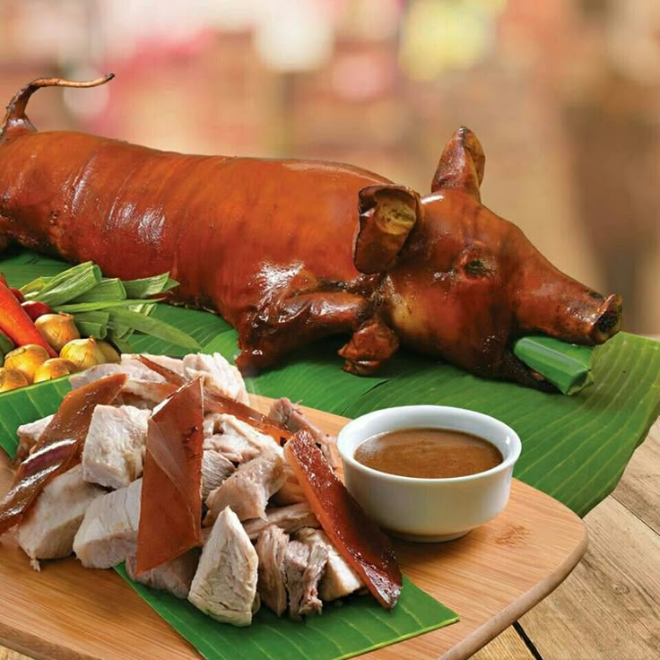
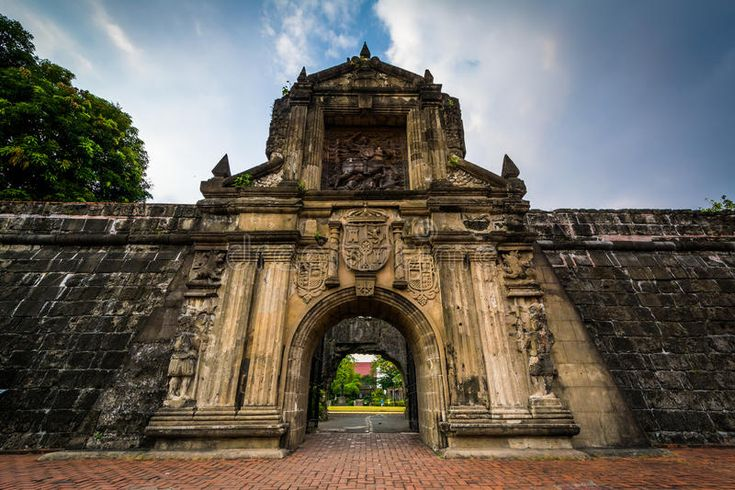
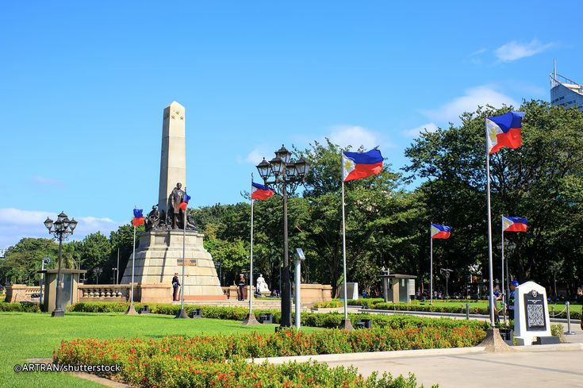
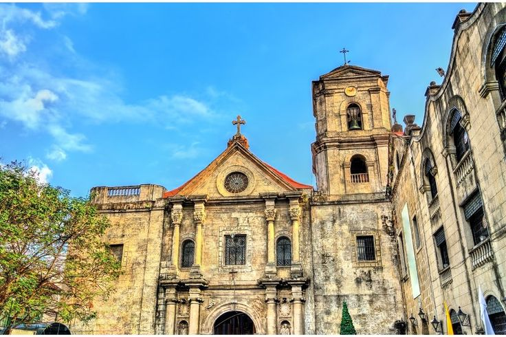
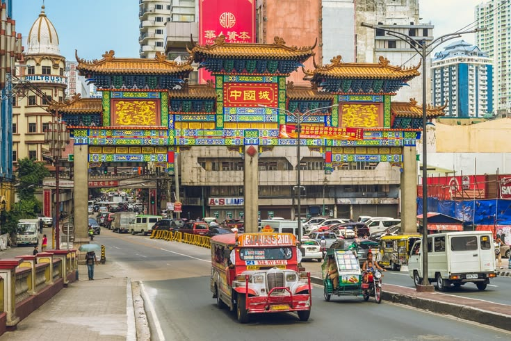

Welcome to Manila City
Where historic streets meet modern skylines, and a rich blend of culture, cuisine, and heritage comes alive in the heart of the Philippines.
Locate Manila Now!About Manila City
Manila, the bustling capital of the Philippines, is a vibrant tapestry of history, culture, and modernity. From the Spanish colonial architecture of Intramuros to the lively streets of Binondo, Manila offers a unique blend of old-world charm and contemporary energy. The city is a melting pot of cultures, reflected in its diverse cuisine, colorful festivals, and warm hospitality. Whether you're exploring historic landmarks, indulging in local delicacies, or immersing yourself in the vibrant arts scene, Manila promises an unforgettable experience for every traveler.

FAMOUS DELICACIES

Adobo
The classic Filipino dish made with meat simmered in soy sauce, vinegar, garlic, and spices. Known for its savory and tangy flavor.

Halo-Halo
A popular Filipino shaved ice dessert mixed with sweet beans, fruits, and topped with leche flan and ube.

Lumpia
Filipino-style spring rolls filled with meat or vegetables, served fresh or fried with sweet and sour sauce.

Lechon
A whole roasted pig, known for its crispy skin and tender meat, often served at celebrations and feasts.

Sinigang
A sour soup dish made with tamarind, vegetables, and meat or seafood. Known for its tangy and flavorful broth.
Pancit
Stir-fried noodles with vegetables, meat, and seafood. A popular Filipino dish often served at celebrations.
TOURIST SPOTS

Intramuros
The historic walled city of Manila, showcasing Spanish colonial architecture and rich cultural heritage.

Rizal Park
A famous park dedicated to José Rizal, perfect for relaxing and learning history..

Marine Ocean Park
A marine-themed park with sea creatures and interactive exhibits...

San Agustin Church
The oldest stone church in the Philippines and a UNESCO World Heritage Site..

Binondo
The world's oldest Chinatown, offering a vibrant mix of culture, cuisine, and commerce.
National Museum of the Philippines
A cultural institution showcasing Filipino art, history, and natural heritage.
FAMOUS FESTIVALS
The city comes alive with the energy of the Manila City highlighted by its vibrant cultural celebrations and the lively atmosphere of its historic and modern attractions..
Feast of black Nazarene
"A major religious festival held every January in Quiapo District, where millions of devotees join a grand procession honoring the Black Nazarene."
A huge religious festival in Manila where millions of devotees join a procession honoring the Black Nazarene.
Manila Day
"An annual celebration on June 24th commemorating the founding of Manila, featuring parades, cultural performances, and city-wide activities."
A celebration marking Manila’s founding, featuring parades, cultural performances, and city-wide activities..
Flores de Mayo
"A May festival honoring the Virgin Mary, featuring flower offerings and the Santacruzan procession."
A month-long May festival honoring the Virgin Mary, featuring daily flower offerings and the grand Santacruzan procession.
SHOWCASE